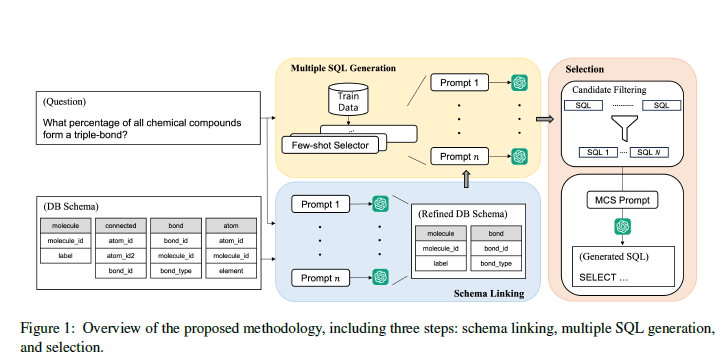

MCS-SQL, Leveraging Multiple Prompts and Multiple-Choice Selection For Text-to-SQL Generation https://arxiv.org/pdf/2405.07467
Abstract
- 이 논문에서는 prompts에 민감한 LLM을 고려해서, 가능한 답변에 대한 더 넓은 탐색 공간을 탐색하고 효과적으로 집계하는 다양한 prompts 활용 방법을 소개
1. Introduction

- LLM 기반 in-context learning(ICL)은 SFT보다 text-to-SQL에서 더 나은 성능을 보였다.
- BIRD benchmark 처럼 복잡한 스키마와 쿼리에서는 낮은 성능을 보였다.
- LLM의 한계점은 prompts의 구조와 컨텐츠에 민감하다는 것이다. 의미적으로 같은 prompts에 대해서도 매우 다른 응답을 생성할 수 있다. 스키마 표현, few-shot 예제의 선택으로 다양한 LLM 결과를 볼 수 있었다.
3. Methodology
3.1 Schema Linking
- Schema Linking으로 text-to-sql 성능이 많이 오름.
- high recall을 목표로 여러 프롬프트를 도입.
3.1.1 Table Linking
- LLM에게 테이블 선택 + 왜 필요한지(CoT) 물음.
- JSON 포맷으로 응답하도록 설정
### For a given DB schema and question,
extract the list of tables required
to write the SQL query.
### DB schema: ...
### Question: ...
Your answer should be in the json format
:
{
"reasoning": "..." # The reason for
selecting each table.
"answer": [...] # List of selected
tables.
}
### Your answer:- 테이블과 컬럼 순서에 따라 결과가 달랐음. 이 영향을 최소화하기 위해 테이블 순서를 셔플해서 \(p_t\)개의 distinct prompts 생성. 각 prompt마다 n개 응답 생성(높은 sampling temperature 사용). n개의 응답을 union. 그 이유는 필요없는 테이블은 뒤의 프로세스에서 큰 영향이 없지만 필요한 테이블이 없는 것은 영향이 크기 때문.
B.1.1 Prompt for Table Linking
### Given a database schema, question, and knowledge evidence, extract a list of
tables that should be referenced to convert the question into SQL.
### SQLite SQL tables, with their properties:
# molecule ( molecule_id, label )
# connected ( atom_id, atom_id2, bond_id )
# bond ( bond_id, molecule_id, bond_type )
# atom ( atom_id, molecule_id, element )
#
# atom.molecule_id = molecule.molecule_id
# bond.molecule_id = molecule.molecule_id
# connected.bond_id = bond.bond_id
# connected.atom_id2 = atom.atom_id
# connected.atom_id = atom.atom_id
### Question: Among all chemical compounds identified in the database, what percent
of compounds form a triple-bond.
### Knowledge Evidence: triple bond refers to bond_type = ’#’;
You need to not only select the required tables, but also explain in detail why each
table is needed.
Your answer should strictly follow the following json format.
{
"reasoning": "", // The reason for choosing each table.
"tables": [], // List of selected tables.
}
### Your Answer:3.1.2 Column Linking
- 앞에서 Table Linking의 결과 테이블만 써서 column linking. prompt도 비슷.
- 같은 컬럼 이름이 존재할 수 있어서
[table_name].[column_name]포맷으로 응답하게 함. - 역시 테이블, 컬럼 순서 셔플해서 prompt \(p_c\)개 생성하고 n개 응답 생성 후 union.
- SQL Generation에서는 Table, Column Linking 결과만을 제시.
B.1.2 Prompt for Column Linking
### Given a database schema, question, and knowledge evidence, extract a list of
columns that should be referenced to convert the question into SQL.
### SQLite SQL tables, with their properties:
# molecule ( molecule_id, label )
# bond ( bond_id, molecule_id, bond_type )
#
# bond.molecule_id = molecule.molecule_id
### Question: Among all chemical compounds identified in the database, what percent
of compounds form a triple-bond.
### Knowledge Evidence: triple bond refers to bond_type = ’#’;
You need to not only select the required columns, but also explain in detail why
each column is needed.
Your answer should strictly follow the following json format.
{{
"reasoning": "", // The reason for choosing each column.
"columns": ["table_name_i.column_name_j", ...], // List of selected columns
}}
### Your Answer:3.2 Multiple SQL Generation
- SQL generation 역시 다양한 prompt로 생성.
- few-shot examples을 선택과 순서를 다양하게 해서 prompt를 생성.
3.2.1 Few-Shot Examples Selection
- 하나의 test sample에 대해 training dataset에서 few-shot examples가 선택된다.
- 여러 prompts를 만들기 위해 두 가지 전략 사용: question similarity, masked question similarity.
- question similarity : test 질문과 가장 가까운 training 질문 top-k개 선택 (sentence embedding)
- question에서 DB Schema에 특화된 tokens를 마스킹. 이 방법은 특정 도메인과 관계없이 비슷한 질문을 찾는 데 도움을 줌. LLM을 사용해서 DB Schema와 질문에서 테이블 이름, 컬럼 이름, 값을 special tokens으로 대체.
- 위 두 가지 방법으로 \(p_q\) 개의 prompts를 만드는데, 하나는 오직 question similarity, 다른 것은 masked similarity, 나머지는 두 가지를 합쳐서 다양한 순서로 만듬.
B.2 Prompt for Question Masking
### Given a DB schema and a question, mask the table name, column name, and values
in the question.
<example1>
### SQLite SQL tables, with their properties:
# customers ( CustomerID: integer, Segment: text, Currency: text )
# gasstations ( GasStationID: integer, ChainID: integer, Country: text, Segment:
text )
# products ( ProductID: integer, Description: text )
# transactions_1k ( TransactionID: integer, Date: date, Time: text, CustomerID:
integer, CardID: integer, GasStationID: integer, ProductID: integer, Amount:
integer, Price: real )
# yearmonth ( CustomerID: integer, Date: text, Consumption: real )
### Question: For all the people who paid more than 29.00 per unit of product id No
.5. Give their consumption status in the August of 2012.
### Masked Question: For all the [TABLE] who paid more than [VALUE] per unit of [
COLUMN] [VALUE]. Give their consumption status in the [VALUE].
</example1>
<example2>
### SQLite SQL tables, with their properties:
# customers ( CustomerID: integer, Segment: text, Currency: text )
# gasstations ( GasStationID: integer, ChainID: integer, Country: text, Segment:
text )
# products ( ProductID: integer, Description: text )
# transactions_1k ( TransactionID: integer, Date: date, Time: text, CustomerID:
integer, CardID: integer, GasStationID: integer, ProductID: integer, Amount:
integer, Price: real )
# yearmonth ( CustomerID: integer, Date: text, Consumption: real )
### Question: How much did customer 6 consume in total between August and November
2013?
### Masked Question: How much did [TABLE] [VALUE] consume in total between [VALUE]
and [VALUE]?
</example2>
<example3>
### SQLite SQL tables, with their properties:
# drivers ( driverId: integer, driverRef: text, number: integer, code: text,
forename: text, surname: text, dob: date, nationality: text, url: text )
### Question: How many Australian drivers who were born in 1980?
### Masked Question: How many [VALUE] [TABLE] who were born in [VALUE]?
</example3>
### SQLite SQL tables, with their properties:
# molecule ( molecule_id, label )
# bond ( bond_id, molecule_id, bond_type )
#
# bond.molecule_id = molecule.molecule_id
### Question: Among all chemical compounds identified in the database, what percent
of compounds form a triple-bond.
### Knowledge Evidence: triple bond refers to bond_type = ’#’;
### Masked Question:3.2.2 SQL Generation
### Generate the correct SQL query for a
given DB schema and question.
### Gold Examples:
- Question: ...
- Gold SQL: ...
...
### DB Schema: ...
### Sample Table Contents: ...
### Question: ...
Your answer should be in the json format
:
{
"reasoning": ".." # The reasoning
steps behind the generated SQL query
"sql": ".." # The generated SQL query.
}
### Your answer:- prompt에는 few-shot examples, DB schema, sample rows, question이 포함.
- few-show examples에는 질문-gold SQL pairs 가 포함.
- prompt 길이를 줄이기 위해 schema-linking 결과 테이블과 컬럼만 포함.
- CSV 포멧으로 sample rows 포함.
- SQL query 뿐만 아니라 reasoning도 생성.
- \(p_q\)개의 prompt, 각 n개 응답 생성. (with a high sampling temperature)
B.3 Prompt for SQL Generation
### Given a database schema, question, and knowledge evidence, generate the correct
sqlite SQL query for the question.
<examples>
# Question: Among all the customers, what is the percentage of the customer’s nation
being Germany?
# Knowledge Evidence: DIVIDE(COUNT(c_custkey when n_name = ’GERMANY’), COUNT(
c_custkey)) as percentage;
# Gold SQL: SELECT CAST(SUM(IIF(T2.n_name = ’GERMANY’, 1, 0)) AS REAL) * 100 / COUNT
(T1.c_custkey) FROM customer AS T1 INNER JOIN nation AS T2 ON T1.c_nationkey =
T2.n_nationkey
# Question: Among the schools whose donators are teachers, what is the percentage of
schools that are in Brooklyn?
# Knowledge Evidence: donors are teachers refers to is_teacher_acct = ’t’; Brooklyn
is school_city; percentage = Divide(Count(school_city-’Brooklyn’),Count(
school_city))*100
# Gold SQL: SELECT CAST(SUM(CASE WHEN T1.school_city LIKE ’Brooklyn’ THEN 1 ELSE 0
END) AS REAL) * 100 / COUNT(T1.teacher_acctid) FROM projects AS T1 INNER JOIN
donations AS T2 ON T1.projectid = T2.projectid WHERE T2.is_teacher_acct = ’t’
...
</examples>
### SQLite SQL tables, with their properties:
# molecule ( molecule_id, label )
# bond ( bond_id, molecule_id, bond_type )
#
# bond.molecule_id = molecule.molecule_id
### The type and description of each column:
# [molecule]
- molecule_id (text): unique id of molecule
- label (text): whether this molecule is carcinogenic or not
# [bond]
- bond_id (text): unique id representing bonds
- molecule_id (text): identifying the molecule in which the bond appears
- bond_type (text): type of the bond
### Sample rows of each table in csv format:
# [molecule]
molecule_id,label
TR000,+
TR001,+
TR002,-
# [bond]
bond_id,molecule_id,bond_type
TR000_1_2,TR000,-
TR000_2_3,TR000,-
TR000_2_4,TR000,-
### Question: Among all chemical compounds identified in the database, what percent
of compounds form a triple-bond.
### Knowledge Evidence: triple bond refers to bond_type = ’#’;
You need to not only create the SQL, but also provide the detailed reasoning steps
required to create the SQL. Your answer should strictly follow the following
json format:
{
"reasoning": "", // The reasoning steps for generating SQL.
"sql": "", // The final generated SQL.
}
### Your Answer:3.3 Selection
- 위에서 생성한 SQL을 confidence scores로 필터링하고 LLM에게 가장 정확한 쿼리를 선택하게 한다.
3.3.1 Candidate Filtering
- 모든 SQL 쿼리를 실행시켜서 에러, 타임아웃 제외.
- 각 쿼리마다 confidence score를 계산해서 0.2 이하 제외.
- 같은 결과를 내는 것들만 묶어서 가장 빠른 쿼리 하나만 남김.
- confidence score : self-consistency 체크. 후보 쿼리 N개 중 하나가 다른 쿼리들과 같은 결과를 내는지. \[ \text{confidence}(q_i)= \frac{1}{N} \sum_{j=1}^N [\text{exec}(q_j) = \text{exec}(q_i)] \]
3.3.2 Multiple-Choise Selection (MCS)
### For a given DB schema and question,
select the most accurate query among
the candidate SQL queries.
### DB schema: ...
### Question: ...
### Candidate SQLs:
1. SQL1
2. SQL2
3. SQL3
Your answer should be in the json format
:
{
"reasoning": ".." # The reasoning
steps for selecting the correct SQL
query.
"sql": ".." # The selected SQL query.
}- LLM을 사용해서 위에서 만든 후보 풀에서 가장 정확한 쿼리를 선택.
- 후보 쿼리들은 confidence scores가 내림차순으로 정렬.
- n개의 응답을 생성. 가장 많은 투표를 받은 쿼리 선택.
B.4 Prompt for SQL Selection
### When a DB schema, a question, and a knowledge evidence are given, and up to
three SQLite queries expressing the question are given, please choose the most
accurate SQL based on the Checklist.
<examples>
# Question: Among all the customers, what is the percentage of the customer’s nation
being Germany?
# Knowledge Evidence: DIVIDE(COUNT(c_custkey when n_name = ’GERMANY’), COUNT(
c_custkey)) as percentage;
# Gold SQL: SELECT CAST(SUM(IIF(T2.n_name = ’GERMANY’, 1, 0)) AS REAL) * 100 / COUNT
(T1.c_custkey) FROM customer AS T1 INNER JOIN nation AS T2 ON T1.c_nationkey =
T2.n_nationkey
# Question: Among the schools whose donators are teachers, what is the percentage of
schools that are in Brooklyn?
# Knowledge Evidence: donors are teachers refers to is_teacher_acct = ’t’; Brooklyn
is school_city; percentage = Divide(Count(school_city-’Brooklyn’),Count(
school_city))*100
# Gold SQL: SELECT CAST(SUM(CASE WHEN T1.school_city LIKE ’Brooklyn’ THEN 1 ELSE 0
END) AS REAL) * 100 / COUNT(T1.teacher_acctid) FROM projects AS T1 INNER JOIN
donations AS T2 ON T1.projectid = T2.projectid WHERE T2.is_teacher_acct = ’t’
...
</examples>
### SQLite SQL tables, with their properties:
# molecule ( molecule_id, label )
# bond ( bond_id, molecule_id, bond_type )
#
# bond.molecule_id = molecule.molecule_id
### The type and description of each column:
# [molecule]
- molecule_id (text): unique id of molecule
- label (text): whether this molecule is carcinogenic or not
# [bond]
- bond_id (text): unique id representing bonds
- molecule_id (text): identifying the molecule in which the bond appears
- bond_type (text): type of the bond
### Sample rows of each table in csv format:
# [molecule]
molecule_id,label
TR000,+
TR001,+
TR002,-
# [bond]
bond_id,molecule_id,bond_type
TR000_1_2,TR000,-
TR000_2_3,TR000,-
TR000_2_4,TR000,-
### Question: Among all chemical compounds identified in the database, what percent
of compounds form a triple-bond.
### Knowledge Evidence: triple bond refers to bond_type = ’#’;
### Candidate SQLs:
1. SELECT CAST(COUNT(CASE WHEN bond_type = ’#’ THEN 1 ELSE NULL END) AS REAL) * 100
/ COUNT(*) FROM bond
2. SELECT CAST(COUNT(DISTINCT CASE WHEN bond_type = ’#’ THEN molecule_id ELSE NULL
END) AS REAL) * 100 / COUNT(DISTINCT molecule_id) FROM bond
### Checklist:
1. The SQL should accurately represent the question.
2. The SQL should accurately use the given knowledge evidence.
3. The SELECT clause should not include any additional columns that are not included
in the question.
4. The order of columns in the SELECT clause must be the same as the order in the
question.
5. Check if the operations are being performed correctly according to the column
type.
### Instruction:
- If the first SQL satisfies all the conditions of the checklist, please choose the
first SQL. If not, move on to the next SQL.
- If there’s no SQL that satisfies all the requirements on the checklist, just
choose the first SQL.
- Provide a detailed step-by-step explanation following the order of the checklist
when checking whether each SQL satisfies the checklist.
- Your answer should strictly follow the following json format.
{{
"reasoning": "", // The reasoning steps for choosing the best SQL.
"sql": "", // The final chosen SQL.
}}
### Your Answer:4. Experimental Setup
4.1 Datasets
- Spider : 10,181 질문, 5,693개의 쿼리, 200 DBs
- BIRD : 12,751 질문-SQL pairs, 95 DB. 더 복잡한 쿼리가 포함되어 있음.
4.2 Evaluation Metrics
- Execution Accuracy(EX) : 생성한 SQL 실행결과가 gold SQL query(answer) 실행결과가 같은지
- Valid Efficiency Score(VES) : BIRD에서 추가로 제시. EX에 gold SQL query 실행 시간과 얼마나 다른지 추가. 정확성과 성능 측정
4.3 Implementation Details
- LLM 모델 : GPT-4
- 임베딩 모델 : text-embedding-ada-002
- similarity search : FAISS
- schema linking(table, column) prompts \(p_t\), \(p_c\) : 3개
- SQL generation prompts \(p_q\) : 5개
- 각 GPT API call 마다 temperature 1.0, n=20 응답 생성
- SQL-generation, MCS 에는 k=20개의 question-SQL pairs를 few-shot example로 사용.
- 타임아웃 180초
- confidence score threshold 0.2
5. Results and Analysis
- Schema Linking에서 다양한 prompts 사용은 확실히 도움 된다. BIRD 기준 prompt 1개, response 1개 - 61.3, prompt 1개, response 20개 - 77.1, prompt 3개, response 20개 - 89.8
- Example Selection에서 Masked Question Similarity는 조금 도움된다. BIRD 기준 Random 57.0, Question Similarity 59.3, Masked Question Similarity 60.0
- MCS는 아주 조금 좋아진다. BIRD 기준 Majority Vote 62.8, MCS without confidence filtering 62.5, MCS with confidence filtering 63.4 (솔직히 비용에 비해 큰 상승 없는 것 같음)
A. Error Analysis
생성 SQL의 실행결과가 Gold SQL 실행결과가 틀린경우 분석 (BIRD 기준)
- Incorrect Gold : answer가 틀린 경우 28%
- Semantically Correct : 컬럼 순서나 추가적인 컬럼이 있는 경우 34%
- Schema-linking Error : 다른 컬럼, 테이블 선택 20%
- 그 외 에러 : 18%
- 62% 정도가 Gold SQL이 잘못됐거나 의미적으로 같은데 실패했다고 판정한 경우
- 20%는 Schema-linking error 인데, 사람조차도 테이블과 컬럼에 대해 모호성으로 틀릴 수 있음. 같은 뜻을 가진 컬럼이나 질문이 컬럼을 특정하지 못하는 경우.
- 나머지 18%는 질문이나 증거를 잘못 해석하거나, DB 데이터에 대한 잘못된 가정, 문법 에러 등이 있었다.
- 이런 이유들로 EX 평가는 매우 과소평가가 된다. text-to-SQL에서는 정확한 Gold SQL을 만들어야 하고 평가 방법을 더 정교하게 만들어야한다.